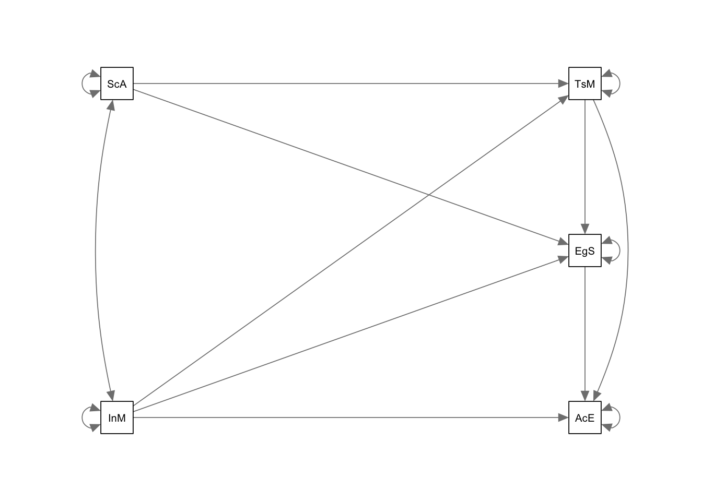
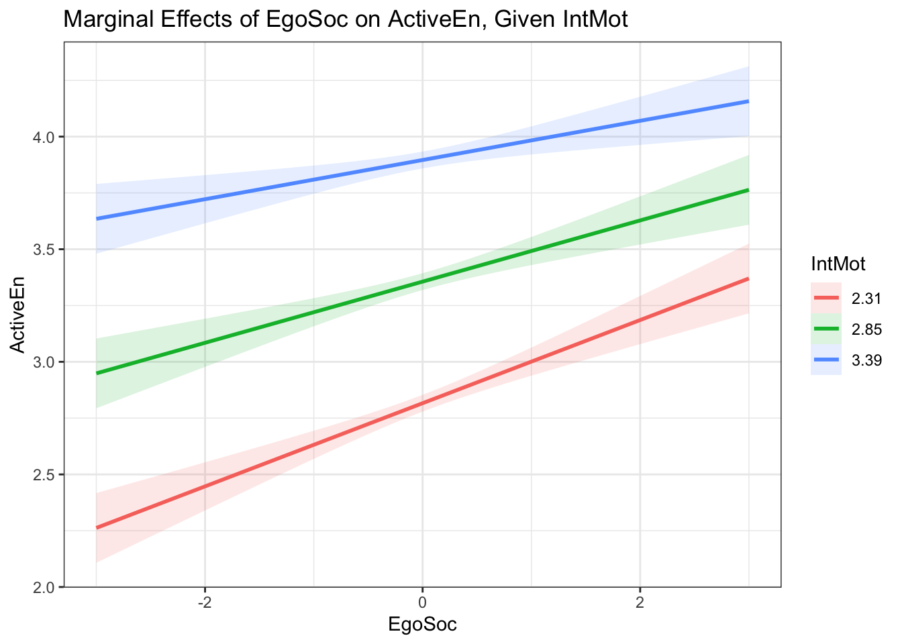
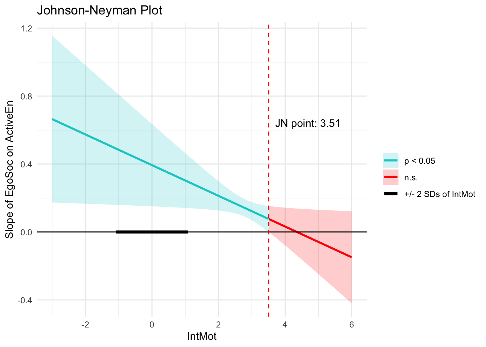

library(rio)
library(lavaan)
library(ggplot2)
library(semPlot)
library(modsem)2 Path Analysis
Note
You can download the R code used in this lab by right-clicking this link and selecting “Save Link As…” in the drop-down menu: pathanalysis.R
2.1 Loading R Packages
If you want to use the functionality of a package, you will need to “load” the package into your environment. To do that, we use the library function:
2.2 Loading Data
You can download the data by right-clicking this link and selecting “Save Link As…” in the drop-down menu: data/meece.csv. Make sure to save it in the folder you are using for this class.
Typically, you will import some data file into your R environment for further analysis. There are many ways of doing this. I will show you two:
- You can use a point-and-click approach by clicking the
Import Datasetbutton in the right-top window. - You can use a function (the one we use is from the
riopackage).
meece <- import(file = "data/meece.csv")The function above will attempt to import the file meece.csv from a folder called data, which is located inside your working directory.
Sometimes, running the code above doesn’t work because R thinks you want to import the data from the wrong folder (which R calls the working directory). We can check what the working directory is:
getwd()If the result of this function is not the folder containing your data file, then you can change the working directory in two ways:
- Use a point-and-click approach by moving your cursor to the bottom-right window to navigate to the correct folder (in the Files tab).
- Use the following R function to change the working directory:
# Mac OS:
setwd("~/Dropbox/Work/Teaching/Measurement/R Labs")
# Windows:
setwd("C:/Users/sonja/Dropbox/Work/Teaching/Measurement/R Labs")
# Note: the folder that you are using for this class will very
# likely be in a different location. Typically, R/RStudio will set the working directory to the folder containing the R file you open. If you start RStudio by itself (instead of opening a file), then the working directory will typically be set to your home folder.
2.3 Model Specification and Identification
Now we can focus on the topic of this module: Path Analysis. We will start by specifying the model that Meece and colleagues specified in their paper. When using lavaan, you need to write out your model as a character string. When specifying a model this way, you can use ~ to mean a one-directional arrow/regression path, and ~~ to mean a bidirectional arrow/covariance.
mod1 <- '
ActiveEn ~ TaskMast
ActiveEn ~ EgoSoc
ActiveEn ~ IntMot
EgoSoc ~ TaskMast
EgoSoc ~ SciAtt
EgoSoc ~ IntMot
TaskMast ~ SciAtt
TaskMast ~ IntMot
SciAtt ~~ IntMot'The above model can be written more efficiently by combining all predictors of an endogenous variable in one line with +.
mod1 <- '
ActiveEn ~ TaskMast + EgoSoc + IntMot
EgoSoc ~ TaskMast + SciAtt + IntMot
TaskMast ~ SciAtt + IntMot
SciAtt ~~ IntMot'To ensure that the model is identified, we can figure out the number of known pieces of information (variances and covariances) and compare those to the number of unknown pieces of information. There are five variables in this model, so we can use that to compute the number of known pieces of information:
(5 *(5 + 1)) / 2[1] 15As we already figured out in class: there are 15 known pieces of information. The model syntax above can help us figure out the number of unknown regression paths and covariances by counting the number of variables on the right side of the ~ (8) and the number of times we see ~~ (1). Next, each exogenous variable has a variance (2), and each endogenous variable has a residual variance (3). Together, these are 14 unknowns. Thus, this model is over-identified!
2.4 Data Exploration
Before analyzing the data, we can check and make sure that the covariance matrix can be inverted, or if the determinant is zero, preventing us from estimating any model.
# Correlation matrix to get first look at magnitude of associations
cor(meece) IntMot SciAtt TaskMast EgoSoc ActiveEn
IntMot 1.00 0.56 0.46 -0.20 0.37
SciAtt 0.56 1.00 0.48 -0.14 0.31
TaskMast 0.46 0.48 1.00 0.13 0.70
EgoSoc -0.20 -0.14 0.13 1.00 0.21
ActiveEn 0.37 0.31 0.70 0.21 1.00# Find the determinant of the covariance matrix
det(cov(meece))[1] 0.0003633127# Find the inverse of the covariance matrix
solve(cov(meece)) IntMot SciAtt TaskMast EgoSoc ActiveEn
IntMot 5.7667640 -2.0054135 -1.1987449 0.8426144 -1.4368836
SciAtt -2.0054135 4.3893196 -1.9705019 0.3240856 0.5191613
TaskMast -1.1987449 -1.9705019 10.3083634 -0.4772837 -7.9323051
EgoSoc 0.8426144 0.3240856 -0.4772837 2.0871669 -1.1371441
ActiveEn -1.4368836 0.5191613 -7.9323051 -1.1371441 16.8297529Looks like there are no issues with linear dependence, indicating that each variable adds to the generalized variance present in the data!
2.5 Model Estimation
Estimating a path model with lavaan is super simple using the sem() function. You need to specify where the model and data can be found and save the results of running the function into another object (fit1):
fit1 <- sem(model = mod1, data = meece)Now that we’ve estimated the model, we can use the semPlot package to visualize the model in a diagram, which can help us check if we actually estimated the model we wanted to estimate. In the function below, rotation = 2 ensures that the exogenous variables are on the left side of the plot. This function has MANY options to help customize the diagram (try ?semPaths to look at the help page).
semPaths(fit1, rotation = 2)
Although this function (and similar ones from other packages) can be helpful, they take a lot of time to make them look publication-ready. So, I typically use PowerPoint to make pretty diagrams (just like the creator of the semPlot package does!).
2.6 Model Evaluation
We will learn about model fit evaluation during a later week. For now, we can examine how similar the observed and model-implied covariance matrix are (or are not).
# The observed covariance matrix
obs_cov <- round(cov(meece[,c(5,4,3,1,2)]), digits = 3)
# The model-implied covariance matrix
imp_cov <- lavInspect(fit1, what = "implied")[[1]]
obs_cov ActiveEn EgoSoc TaskMast IntMot SciAtt
ActiveEn 0.122 0.055 0.118 0.070 0.066
EgoSoc 0.055 0.563 0.047 -0.081 -0.064
TaskMast 0.118 0.047 0.230 0.119 0.141
IntMot 0.070 -0.081 0.119 0.292 0.184
SciAtt 0.066 -0.064 0.141 0.184 0.372imp_cov ActvEn EgoSoc TskMst IntMot SciAtt
ActiveEn 0.122
EgoSoc 0.055 0.560
TaskMast 0.117 0.047 0.230
IntMot 0.070 -0.081 0.119 0.290
SciAtt 0.073 -0.064 0.140 0.184 0.371# The difference between observed and implied gives an indication
# of what parts of the data are well-represented in the model
obs_cov - imp_cov ActvEn EgoSoc TskMst IntMot SciAtt
ActiveEn 0.000
EgoSoc 0.000 0.003
TaskMast 0.001 0.000 0.000
IntMot 0.000 0.000 0.000 0.002
SciAtt -0.007 0.000 0.001 0.000 0.001It can be challenging to interpret covariances, so we can do something similar but using the correlation matrices instead.
# The observed correlation matrix
obs_cor <- round(cor(meece[,c(5,4,3,1,2)]), digits = 3)
# The model-implied correlation matrix
imp_cor <- lavInspect(fit1, what = "cor.ov")
obs_cor ActiveEn EgoSoc TaskMast IntMot SciAtt
ActiveEn 1.00 0.21 0.70 0.37 0.31
EgoSoc 0.21 1.00 0.13 -0.20 -0.14
TaskMast 0.70 0.13 1.00 0.46 0.48
IntMot 0.37 -0.20 0.46 1.00 0.56
SciAtt 0.31 -0.14 0.48 0.56 1.00imp_cor ActvEn EgoSoc TskMst IntMot SciAtt
ActiveEn 1.000
EgoSoc 0.210 1.000
TaskMast 0.700 0.130 1.000
IntMot 0.370 -0.200 0.460 1.000
SciAtt 0.343 -0.140 0.480 0.560 1.000# The difference between observed and implied gives an indication of
# what parts of the data are well-represented in the model
obs_cor - imp_cor ActvEn EgoSoc TskMst IntMot SciAtt
ActiveEn 0.000
EgoSoc 0.000 0.000
TaskMast 0.000 0.000 0.000
IntMot 0.000 0.000 0.000 0.000
SciAtt -0.033 0.000 0.000 0.000 0.000For which pair of variables is the difference between the observed and model-implied correlation largest? What does that indicate about the model we specified?
2.7 Parameter Interpretation
To examine the parameter estimates, we can use the summary function. The std = TRUE option is included so we also get standardized estimates.
summary(fit1, std = TRUE)lavaan 0.6-19 ended normally after 16 iterations
Estimator ML
Optimization method NLMINB
Number of model parameters 14
Number of observations 256
Model Test User Model:
Test statistic 0.936
Degrees of freedom 1
P-value (Chi-square) 0.333
Parameter Estimates:
Standard errors Standard
Information Expected
Information saturated (h1) model Structured
Regressions:
Estimate Std.Err z-value P(>|z|) Std.lv Std.all
ActiveEn ~
TaskMast 0.459 0.037 12.397 0.000 0.459 0.630
EgoSoc 0.070 0.021 3.263 0.001 0.070 0.150
IntMot 0.072 0.033 2.147 0.032 0.072 0.110
EgoSoc ~
TaskMast 0.504 0.109 4.645 0.000 0.504 0.323
SciAtt -0.179 0.092 -1.952 0.051 -0.179 -0.145
IntMot -0.371 0.102 -3.631 0.000 -0.371 -0.267
TaskMast ~
SciAtt 0.255 0.050 5.075 0.000 0.255 0.324
IntMot 0.248 0.057 4.363 0.000 0.248 0.279
Covariances:
Estimate Std.Err z-value P(>|z|) Std.lv Std.all
IntMot ~~
SciAtt 0.184 0.024 7.818 0.000 0.184 0.560
Variances:
Estimate Std.Err z-value P(>|z|) Std.lv Std.all
.ActiveEn 0.059 0.005 11.314 0.000 0.059 0.487
.EgoSoc 0.495 0.044 11.314 0.000 0.495 0.884
.TaskMast 0.164 0.015 11.314 0.000 0.164 0.716
IntMot 0.290 0.026 11.314 0.000 0.290 1.000
SciAtt 0.371 0.033 11.314 0.000 0.371 1.000Guidelines recommend you report both unstandardized and standardized estimates with standard errors. To get standardized estimates with standard errors (which are not included in the summary above), you can use the following function.
standardizedSolution(fit1, type = "std.all") lhs op rhs est.std se z pvalue ci.lower ci.upper
1 ActiveEn ~ TaskMast 0.630 0.043 14.593 0.000 0.545 0.714
2 ActiveEn ~ EgoSoc 0.150 0.046 3.265 0.001 0.060 0.240
3 ActiveEn ~ IntMot 0.110 0.051 2.150 0.032 0.010 0.211
4 EgoSoc ~ TaskMast 0.323 0.067 4.807 0.000 0.191 0.454
5 EgoSoc ~ SciAtt -0.145 0.074 -1.964 0.050 -0.290 0.000
6 EgoSoc ~ IntMot -0.267 0.072 -3.709 0.000 -0.408 -0.126
7 TaskMast ~ SciAtt 0.324 0.062 5.253 0.000 0.203 0.445
8 TaskMast ~ IntMot 0.279 0.062 4.471 0.000 0.156 0.401
9 IntMot ~~ SciAtt 0.560 0.043 13.054 0.000 0.476 0.644
10 ActiveEn ~~ ActiveEn 0.487 0.044 11.168 0.000 0.401 0.572
11 EgoSoc ~~ EgoSoc 0.884 0.038 23.521 0.000 0.811 0.958
12 TaskMast ~~ TaskMast 0.716 0.048 15.021 0.000 0.623 0.810
13 IntMot ~~ IntMot 1.000 0.000 NA NA 1.000 1.000
14 SciAtt ~~ SciAtt 1.000 0.000 NA NA 1.000 1.000Looking at the estimates above, what is the strongest effect? What is the weakest effect? Are there any negative effects? What about the association between the two exogenous variables? Which estimates helped you most when thinking about these questions?
2.8 Exercise: Respecify the model and evaluate the fit of said model
Use the code below to specify and estimate a second model. You can modify the model above, or start from scratch and come up with a whole new model (maybe the one you drew during Week 1 of the semester).
mod2 <- '
'
fit2 <- sem(model = mod2, data = meece)
summary(fit2, std = TRUE)2.9 Including Interaction Effects
We will now use the meece data to practice including an interaction effect in our path analysis model. Lets say we are interested in a simple model, in which Ego-Social Goal Orientation and Intrinsic Motivation both predict Active Cognitive Engagement. In addition, we’re interested in understanding to what extent Intrinsic Motivation moderates the association between Ego-Social Goals and Active Engagement.
When estimating a linear regression in R, you can include an interaction effect quite easily:
fit_lm <- lm(ActiveEn ~ EgoSoc + IntMot + EgoSoc*IntMot,
data = meece)
summary(fit_lm)
Call:
lm(formula = ActiveEn ~ EgoSoc + IntMot + EgoSoc * IntMot, data = meece)
Residuals:
Min 1Q Median 3Q Max
-0.80566 -0.21744 0.00282 0.20297 0.97698
Coefficients:
Estimate Std. Error t value Pr(>|t|)
(Intercept) 0.47313 0.33727 1.403 0.16189
EgoSoc 0.39341 0.12398 3.173 0.00169 **
IntMot 0.50620 0.11418 4.433 1.39e-05 ***
EgoSoc:IntMot -0.09037 0.04288 -2.107 0.03607 *
---
Signif. codes: 0 '***' 0.001 '**' 0.01 '*' 0.05 '.' 0.1 ' ' 1
Residual standard error: 0.3081 on 252 degrees of freedom
Multiple R-squared: 0.2344, Adjusted R-squared: 0.2253
F-statistic: 25.72 on 3 and 252 DF, p-value: 1.506e-14In most SEM software programs, you cannot include an interaction effect in this way. The lavaan syntax below will run, but simply assigns EgoSoc as a label to the regression path for IntMot. You’ll see that running the code below results in a linear regression model with two predictors, but no interaction effect.
mod3 <- '
ActiveEn ~ EgoSoc + IntMot + EgoSoc*IntMot
'
fit3 <- sem(model = mod3, data = meece)
summary(fit3)Instead, we need to use a supporting R package, modsem, which can help you estimate interaction effects between observed (and latent) variables. It does so by introducing a new operator (:), which can be used like * in the lm() function. We have to use the modsem function and specify a method for how to compute the interaction effect (alternative methods can be used when estimating a latent variable interaction effect):
mod3 <- '
ActiveEn ~ EgoSoc + IntMot + EgoSoc:IntMot
'
fit3 <- modsem(model = mod3, data = meece, method = "pind")
summary(fit3, std = TRUE)modsem (version 1.0.5, approach = pind):
lavaan 0.6-19 ended normally after 1 iteration
Estimator ML
Optimization method NLMINB
Number of model parameters 4
Number of observations 256
Model Test User Model:
Test statistic 0.000
Degrees of freedom 0
Parameter Estimates:
Standard errors Standard
Information Expected
Information saturated (h1) model Structured
Regressions:
Estimate Std.Err z-value P(>|z|) Std.lv Std.all
ActiveEn ~
EgoSoc 0.393 0.123 3.198 0.001 0.393 0.843
IntMot 0.506 0.113 4.468 0.000 0.506 0.781
EgoSocIntMot -0.090 0.043 -2.124 0.034 -0.090 -0.600
Variances:
Estimate Std.Err z-value P(>|z|) Std.lv Std.all
.ActiveEn 0.093 0.008 11.314 0.000 0.093 0.766When we have two continuous predictors, we can interpret their interaction effect as follows:
- The interaction regression coefficient represents the effect of a one-unit change in Intrinsic Motivation on the association between Ego-Social Goal Orientation and our outcome Active Cognitive Engagement.
It is often easier to interpret this kind of interaction by plotting the relationship between a predictor and outcome at different levels of the second predictor (or moderator). Typical levels are the mean of the moderator and one standard deviation above/below that mean. We can use functions from the modsem package.
# Set up the values at which we want to probe the impact of
# Task Mastery Goals:
# First we compute the value that is one SD below the mean, then
# the mean, and finally the value that is one SD above the mean
simple_slope_values <- c(mean(meece$IntMot) - sd(meece$IntMot),
mean(meece$IntMot),
mean(meece$IntMot) + sd(meece$IntMot))
# Round to 2 decimals for readability
simple_slope_values <- round(simple_slope_values, 2)
plot_interaction("EgoSoc", "IntMot", "ActiveEn", "EgoSocIntMot", vals_z = simple_slope_values,
model = fit3)
Note that the modsem plot functions use mean-centering for plotting whatever is shown on the x-axis. Thus, in the plot above, a value of 0 on EgoSoc represents the mean of EgoSoc (which is 2.48).
The simple slopes plot above shows that the association between Ego-Social Goal Orientation and Active Engagement decreases for those with higher levels of Intrinsic Motivation (blue line). We can test at what level of Intrinsic Motivation the association between Ego-Social Goals and Active Engagement stops being significant by computing and plotting Johnson-Neyman regions. The max_z argument determines the maximum value shown on the x-axis. Remember that the x-axis is mean-centered, so here, the maximum value is six points above the mean.
plot_jn(x = "EgoSoc", z = "IntMot", y = "ActiveEn", model = fit3, max_z = 6)
The plot above shows that the association between Ego-Social Goals and Active Engagement stops being significant when Intrinsic Motivation is 3.51 points above the average. The horizontal black line represents the distribution of values for Intrinsic Motivation. The thicker part of the black line covers values within 2 standard deviations from the average Intrinsic Motivation score. Any values beyond this region have a very low probability and are unlikely to be observed in the population. Thus, we can conclude that the effect of Ego-Social Goals on Active Engagement is significant across all typical levels of Intrinsic Motivation (perhaps indicating that the moderation effect is quite small).
You can use a similar approach to estimate interaction effects between dichotomous (yes/no) variables or a mix of dichotomous and continuous predictors. Interaction effects can also be combined with indirect effects and larger path models. We will revisit interaction effects in a bonus section of the SEM R Lab, to see how we can use this package to estimate latent variable interaction effects.
2.10 Summary
In this R lab, you were introduced to the steps involved in specifying, estimating, and interpreting the results of a path model, an important quantitative method that can help us understand the associations among many variables. As you may have noticed, the model that Meece and colleagues specified included several indirect effects. How you can specify and evaluate the significance of those indirect effects will be the focus of the next R Lab.